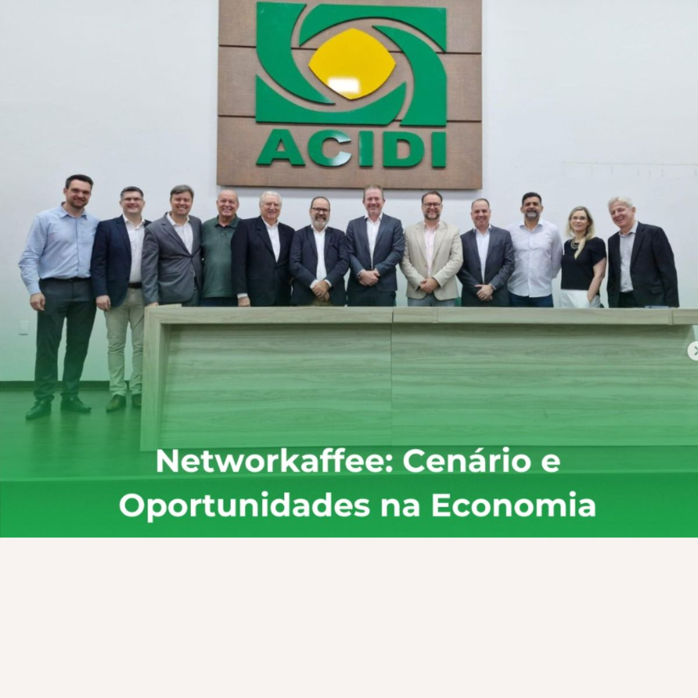
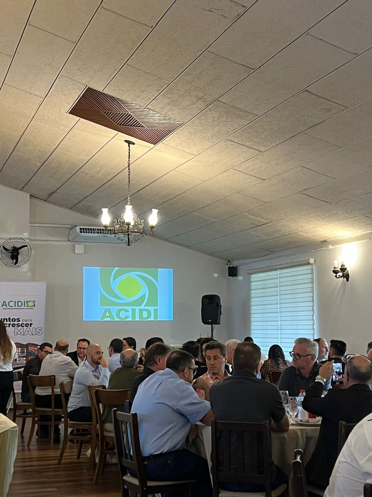
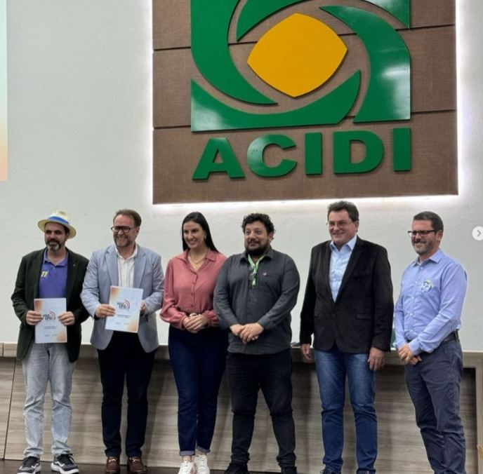
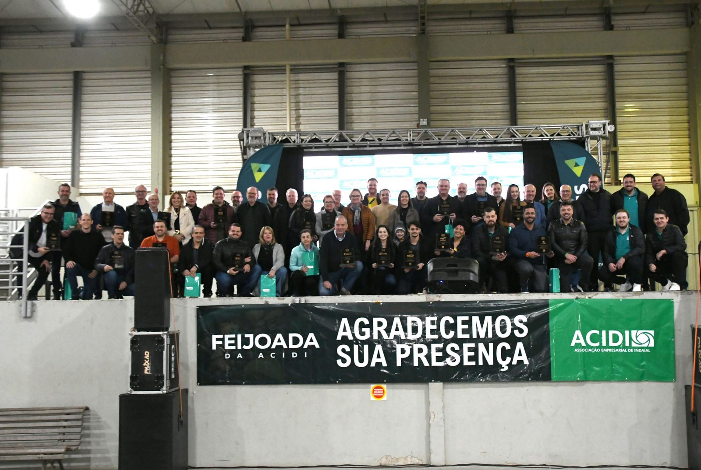
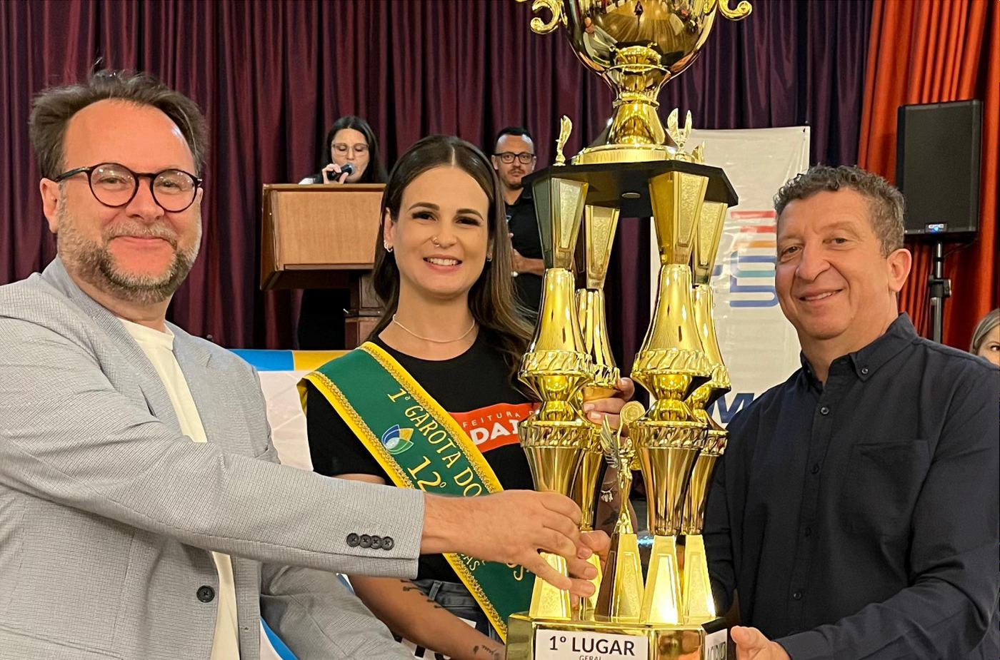
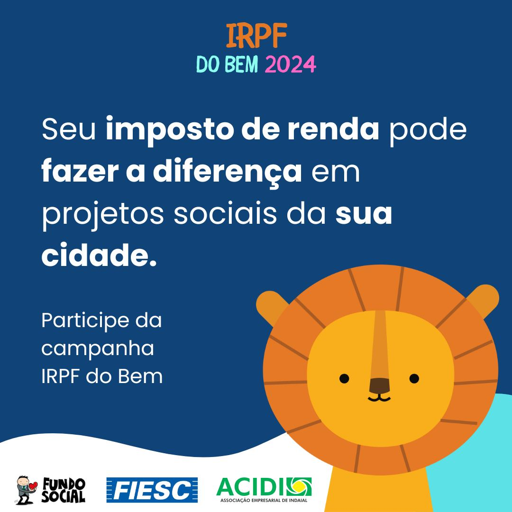

Notícias da ACIDI
Eventos, iniciativas e ações de representatividade da associação, com a data original de cada publicação.

Contabilidade e impacto social: construindo um futuro melhor
O auditório da ACIDI recebeu contadores e empresários da área contábil para debater o papel da contabilidade no desenvolvimento de Indaial.

Comitiva de Indaial realiza visita técnica à cidade de Maringá (PR)
Lideranças de Indaial conheceram em Maringá boas práticas de desenvolvimento urbano, inovação e gestão pública, em viagem organizada pela ACIDI.

ACIDI promove a 1ª edição do ACIDI Itinerante na Villa Germânia Alimentos
O novo formato leva os encontros de associados para dentro das empresas, com palestra, almoço e visita aos processos produtivos.

Networkaffee reúne empreendedores para debater cenário e oportunidades
Encontro matinal da ACIDI discutiu tendências macroeconômicas e oportunidades financeiras para as empresas.

Encontro de Lideranças Regionais reúne associados na SRI
Almoço de associados recebeu o secretário Paulo Bornhausen e o prefeito eleito de Indaial, Silvio César.

ACIDI entrega o Documento Voz Única Municipal aos candidatos a prefeito de Indaial
Em parceria com entidades de classe da cidade, a ACIDI apresentou as necessidades de Indaial aos cinco candidatos à prefeitura.

Segunda Feijoada da ACIDI reúne associados e celebra os 35 anos da entidade
O evento homenageou empresas associadas e reuniu famílias, colaboradores e amigos com música, área kids e feira de artesanato.

Encerramento dos 12º Jogos Entre Empresas celebra esporte e integração em Indaial
A competição reuniu mais de 105 empresas e mais de 2.500 atletas em mais de 20 modalidades, de março a junho.

ACIDI celebra 35 anos com posse da nova diretoria
Marcondes Aurélio Moser assumiu a presidência para o biênio 2024–2026, sucedendo Rogério Patricio.

Transforme sua declaração de Imposto de Renda em uma ação de impacto social em Indaial
A ACIDI apoiou a campanha de destinação do imposto de renda aos fundos dos Direitos da Criança, do Adolescente e da Pessoa Idosa.